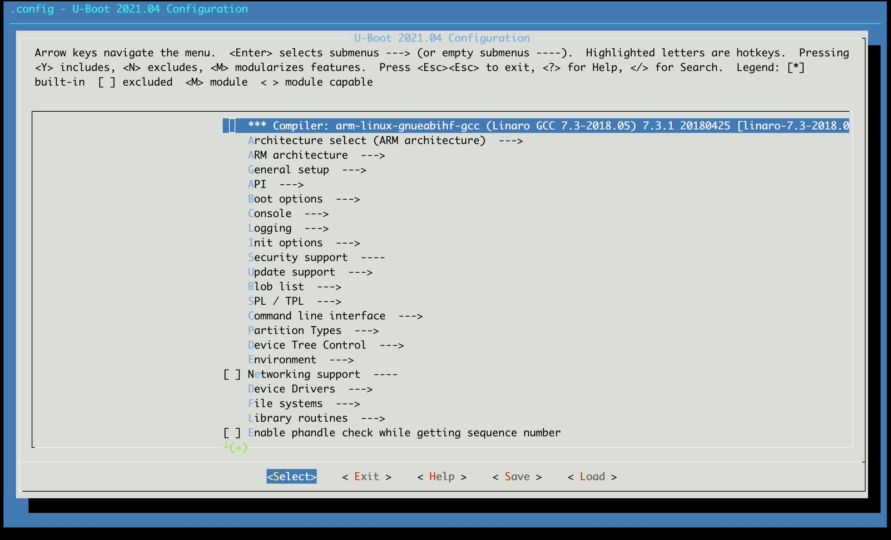

U-Boot
4.1 U-Boot 简介
U-Boot属于BootLoader的一种，而BootLoader是在操作系统内核运行之前运行，也就是引导硬件从上电到操作系统的过程，BootLoader就是这么一段小程序。
宏观的看，BootLoader主要的工作就是初始化硬件设备、建立内存空间的映射表，最终创建一个适当的系统软硬件环境。 微观的看BootLoader程序会先初始化 DDR 等外设，然后将 Linux 内核从 flash(NAND、NOR FLASH、SD、MMC 等)拷贝到DDR 中，最后启动 Linux 内核。当然了，BootLoader的实际工作要复杂的多，但是它最主要的工作就是启动 Linux 内核。
4.2 U-Boot 目录结构
以U-boot-2021.04 源码为例
.
├── api //封装一些平台无关的操作，如字符串打印，显示，网络，内存
├── arch //以平台架构区分
│ ├──arm
│ │ └──cpu
│ │ │ └──armv7
│ │ │ │ └──sunxi //cpu相关的一些操作，如定时器读取
│ │ │ │ │ └──u-boot-spl.lds //spl的放置方法
│ │ └──dts
│ │ │ └──sun8i-v40-bananapi-m2-berry.dtb // a40i芯片的一些配置
│ │ │ └──sun8i-r40.dtsi
│ │ └──lib //一些库文件
│ │ └──mach-sunxi
│ │ │ └──board.c //board_init_f
│ │ │ └──dram_sunxi_dw.c //ddr的操作，复位，时钟，延时，odt，etc.
│ │ │ └──dram_helpers.c //ddr的设置及读写测试
├── board
│ ├──sunxi
│ │ └──board.c //sunxi_board_init 入口
├── cmd //Uboot命令行的一些命令
├── common //含spl
├── configs //menuconfig里的默认配置,比如各类驱动适配
│ ├── bananapi_m2_berry_defconfig
├── disk //硬盘分区的驱动
├── doc
├── drivers //外设驱动
├── dts
├── examples
├── fs //多种文件系统
├── include
│ ├──configs
│ │ └──sunxi_common.h //预配置的参数，如串口号等
│ │ └──suniv.h
├── lib //加密压缩等算法
├── net //nfs,tftp等网络协议
├── post
├── scripts
4.3 U-Boot 配置
在Buildroot根目录下输入
make uboot-menuconfig

进行配置后执行编译
make uboot
即可以得到u-boot-sunxi-with-spl.bin
4.4 U-Boot 分区
采用 NAND FLASH 方案，分区在 MTDPARTS_DEFAULT 中定义，具体位置为
-> Command line interface
-> Filesystem commands
-> MTD partition support
具体的分区方案如下所示
CONFIG_MTDPARTS_DEFAULT="mtdparts=sunxi_nand:128k(spl_a),768k(bootloader_a),128k(dtb_a),6m(kernel_a),-(filesystem_a)"
| 分区序号 | 分区大小 | 分区属性 | 地址空间及分区名字 |
|---|---|---|---|
| mtd0 | 128KB | spl | 0x00000000-0x20000:"spl" |
| mtd1 | 768KB | bootloader | 0x20000-0xE0000:"bootloader" |
| mtd2 | 128KB | dtb设备树 | 0xE0000-0x100000:"dtb" |
| mtd3 | 6MB | kernel内核 | 0x100000-0x700000:"kernel" |
| mtd4 | 剩余空间 | rootfs文件系统 | 0x700000-end :"roootfs" |
4.5 参考资料
关于更多 U-Boot 配置相关的可以参考以下链接